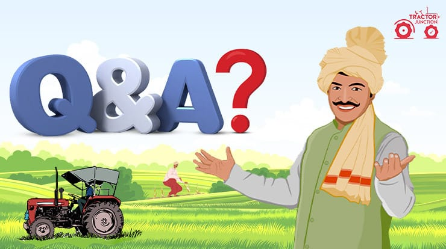

FREQUENTLY ASKED QUESTIONS

What is agriculture?
Agriculture is the art and science of cultivating the soil, growing crops and raising livestock. It
includes the preparation of plant and animal products for people to use and their distribution to
markets.
What is organic farming and why is it important?
Organic farming is agriculture that makes healthy food, healthy soils, healthy plants, and healthy
environments a priority, along with crop productivity. Organic farmers use biological fertilizer inputs
and management practices such as cover cropping and crop rotation to improve soil quality and build
organic soil matter. By increasing the amount of organic matter in the soil, organic farmers enhance the
soil’s ability to absorb water, reducing the impacts of drought and flooding. Improving soil organic
matter also helps it to absorb and store carbon and other nutrients need to grow healthy crops, which,
in turn, are better able to resist insects and diseases..
How does organic farming help the environment?
Using biological forms of fertilizer such as compost, animal manures, and legume cover crops, builds
soil organic matter, even when routine tillage is used for weed control. Building soil organic matter
increases soil water retention and nurtures more active soil microbial communities that retain nitrogen
in the soil longer and transform it into non-leachable gaseous forms. There is a small but telling body
of research in the US that suggests that improved soil quality influences the ability of crops to
withstand or repel insect attack and plant disease.
How does organic farming improve soil and water quality?
Using biological forms of fertilizer such as compost, animal manures, and legume cover crops, builds
soil organic matter, even when routine tillage is used for weed control. Building soil organic matter
increases soil water retention and nurtures more active soil microbial communities that retain nitrogen
in the soil longer and transform it into non-leachable gaseous forms. There is a small but telling body
of research in the US that suggests that improved soil quality influences the ability of crops to
withstand or repel insect attack and plant disease.
Organic biological fertilizer sources release their nutrients slowly over time, providing more
opportunity for the nitrogen to be digested by soil organisms and taken up by crops before leaching
below the root zone.
Are organic yields lower?
However, while organic agriculture may produce lower yields when compared to conventional agriculture,
organic farming is often more profitable, delivers more environmental benefits, and is healthier in
terms of increased nutritional benefits and reduced dietary pesticide exposure.
What is organic agriculture research act?
H.R. 2436, the Organic Agriculture Research Act of 2017, was introduced by Representative Chellie
Pingree (D-ME) with cosponsors Representative Dan Newhouse (R-WA), and Jimmy Panetta (D-CA). This
bipartisan legislation was approved in the 2018 Farm Bill and will provide $395 million for organic
agriculture research and education over the next ten years. This milestone is the biggest win for
organic farming in the Farm Bill in decades, securing permanent funding for organic research at USDA.
Why does organic cost more?
The cost of organic food is higher than that of conventional food because the organic price tag more
closely reflects the true cost of growing the food: substituting labor and intensive management for
chemicals. These costs may include cleanup of polluted water and remediation of pesticide contamination.
How does organic farming help mitigate climate change?
Climate change poses critical risks for farmers and ranchers and endangers the soil, water, and other
resources on which food production depends. Rising temperatures have already intensified droughts, heat
waves, and storms, making it harder to grow crops and raise livestock.
The good news is that organic systems that emphasize soil health help farmers and ranchers increase
resilience to the impacts of climate change. There is also extensive research demonstrating the
potential of organic systems to reduce agriculture’s contribution to climate change (i.e., mitigate
climate change).
Organic systems do this by capturing and storing more carbon (CO2) in the soil (carbon sequestration).
While organic systems require some level of physical disturbance to control weeds, they eliminate
synthetic inputs and can significantly reduce tillage. Reduced tillage, crop diversification, cover
cropping, organic amendments, and sound nutrient management can enhance carbon sequestration and build
climate resiliency in organic agricultural systems.
Which soil is most suitable for agriculture?
Loamy-textured soils are commonly described as medium textured with functionally-equal contributions of
sand, silt, and clay. These medium-textured soils are often considered ideal for agriculture as they are
easily cultivated by farmers and can be highly productive for crop growth.
What is agriculture?
Agriculture is the art and science of cultivating the soil, growing crops and raising livestock. It
includes the preparation of plant and animal products for people to use and their distribution to
markets.
What is agriculture?
Agriculture is the art and science of cultivating the soil, growing crops and raising livestock. It
includes the preparation of plant and animal products for people to use and their distribution to
markets.